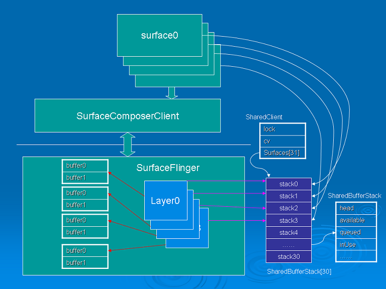

缓冲区管理
概述
-
从显示缓冲区的作用可以发现，Canvas绑定缓冲区时，要通过SharedBufferClient的dequeue方法取得空闲的缓冲区，而解除绑定并提交缓冲区投递时，最后也要调用SharedBufferClient的queue方法通知SurfaceFlinger的工作线程。
-
实际上，在SurfaceFlinger里，每个Layer也会关联一个SharedBufferServer，SurfaceFlinger的工作线程通过 SharedBufferServer管理着Layer的缓冲区，在SurfaceComposerClient建立连接的阶段，SurfaceFlinger就已经为该连接创建了一个SharedBufferServer对象。
-
SharedClient对象中包含了一个SharedBufferStack数组，数组的大小是31，每当创建一个Surface，就会占用数组中的一个 SharedBufferStack，然后SurfaceComposerClient端的Surface会创建一个SharedBufferClient和该SharedBufferStack关联，而SurfaceFlinger端的Layer也会创建 SharedBufferServer和SharedBufferStack关联，实际上每对SharedBufferClient/SharedBufferServer是控制着同一个SharedBufferStack对象，通过 SharedBufferStack，保证了负责对Surface的画图操作的应用端和负责刷新屏幕的服务端(SurfaceFlinger)可以使用不同的缓冲区，并且让他们之间知道对方何时锁定/释放缓冲区。
缓冲区的建立
第一阶段
-
Surface(C++层)在构造方法中会初始化SurfaceClient类型的变量mClient。
-
SurfaceClient构造方法会通过ISurfaceComposer接口的createClientConnection方法创建SurfaceFlinger端的
UserClient对象。
-
UserClient在构造方法中会初始化MemoryHeapBase类型的变量mCblkHeap。
-
接下来使用mClient->getControlBlock()方法获取Server端上一步创建的mCblkHeap对象，并转换成对应的SharedClient对象。
-
至此，在Surface初始化的第一阶段已经在SurfaceFlinger服务端创建了MemoryHeapBase，并通过Binder机制转换成Client端对应的SharedClient对象。这片内存是为了将来管理Layer对象的内存缓冲区。
Surface::Surface
Surface::Surface(const sp<SurfaceControl>& surface)
: mBufferMapper(GraphicBufferMapper::get()),
mClient(SurfaceClient::getInstance()), // 初始化SurfaceClient
mSharedBufferClient(NULL),
mInitCheck(NO_INIT),
mSurface(surface->mSurface),
mIdentity(surface->mIdentity),
mFormat(surface->mFormat), mFlags(surface->mFlags),
mWidth(surface->mWidth), mHeight(surface->mHeight)
{
......
init();
}
SurfaceClient
class SurfaceClient : public Singleton<SurfaceClient>
{
sp<ISurfaceComposerClient> mClient;
......
SurfaceClient() : Singleton<SurfaceClient>(), mStatus(NO_INIT)
{
sp<ISurfaceComposer> sf(ComposerService::getComposerService());
mComposerService = sf;
// 从SurfaceFlinger创建UserClient对象
mClient = sf->createClientConnection();
if (mClient != NULL) {
// 获得SurfaceFlinger服务端的内存对象并转换成SharedClient
mControlMemory = mClient->getControlBlock();
if (mControlMemory != NULL) {
mControl = static_cast<SharedClient *>(
mControlMemory->getBase());
if (mControl) {
mStatus = NO_ERROR;
}
}
}
}
......
public:
SharedClient* getSharedClient() const {
return mControl;
}
ssize_t getTokenForSurface(const sp<ISurface>& sur) const {
// TODO: we could cache a few tokens here to avoid an IPC
return mClient->getTokenForSurface(sur);
}
......
};
SurfaceFlinger::createClientConnection
sp<ISurfaceComposerClient> SurfaceFlinger::createClientConnection()
{
sp<ISurfaceComposerClient> bclient;
sp<UserClient> client(new UserClient(this));
status_t err = client->initCheck();
if (err == NO_ERROR) {
bclient = client;
}
return bclient;
}
UserClient::UserClient
UserClient::UserClient(const sp<SurfaceFlinger>& flinger)
: ctrlblk(0), mBitmap(0), mFlinger(flinger)
{
const int pgsize = getpagesize();
const int cblksize = ((sizeof(SharedClient)+(pgsize-1))&~(pgsize-1));
// 创建MemoryHeapBase对象
mCblkHeap = new MemoryHeapBase(cblksize, 0,
"SurfaceFlinger Client control-block");
ctrlblk = static_cast<SharedClient *>(mCblkHeap->getBase());
if (ctrlblk) { // construct the shared structure in-place.
new(ctrlblk) SharedClient;
}
}
UserClient::getControlBlock
sp<IMemoryHeap> UserClient::getControlBlock() const {
return mCblkHeap;
}
第二阶段
-
这个阶段是在Surface的构造函数的方法块中，会调用init方法，mClient.getTokenForSurface是通过Binder调用UserClient::getTokenForSurface方法(第一阶段在SurfaceFlinger端创建的)。
-
该方法会调用Layer::getToken方法，实际是创建SharedBufferServer对象。
-
如果创建成功，则会以该对象句柄和第一阶段创建的SharedClient对象为参数，构造一个SharedBufferClient对象与之相对应。
-
至此Client端和Server是分别通过SharedBufferClient和SharedBufferServer来维护各自的缓冲区，但是这些缓冲区都是构建于token这个索引，该索引就是SharedClient中的SharedBufferStack数组的索引。所以管理这些缓冲区的堆栈只有一个，即SharedBufferStack。
Surface::init
void Surface::init()
{
......
if (mSurface != 0 && mClient.initCheck() == NO_ERROR) {
// 获得对应Server端的缓冲区句柄
int32_t token = mClient.getTokenForSurface(mSurface);
if (token >= 0) {
// 初始化SharedBufferClient对象
mSharedBufferClient = new SharedBufferClient(
mClient.getSharedClient(), token, 2, mIdentity);
mInitCheck = mClient.getSharedClient()->validate(token);
}
}
}
UserClient::getTokenForSurface
ssize_t UserClient::getTokenForSurface(const sp<ISurface>& sur) const
{
int32_t name = NAME_NOT_FOUND;
sp<Layer> layer(mFlinger->getLayer(sur));
if (layer == 0) return name;
// if this layer already has a token, just return it
name = layer->getToken();
if ((name >= 0) && (layer->getClient() == this))
return name;
name = 0;
do {
int32_t mask = 1LU<<name;
if ((android_atomic_or(mask, &mBitmap) & mask) == 0) {
// we found and locked that name
status_t err = layer->setToken(
const_cast<UserClient*>(this), ctrlblk, name);
if (err != NO_ERROR) {
// free the name
android_atomic_and(~mask, &mBitmap);
name = err;
}
break;
}
if (++name >= SharedBufferStack::NUM_LAYERS_MAX)
name = NO_MEMORY;
} while(name >= 0);
return name;
}
Layer::setToken
status_t Layer::setToken(const sp<UserClient>& userClient,
SharedClient* sharedClient, int32_t token)
{
// 创建SharedBufferServer
sp<SharedBufferServer> lcblk = new SharedBufferServer(
sharedClient, token, mBufferManager.getDefaultBufferCount(),
getIdentity());
// 保存在ClientRef中
status_t err = mUserClientRef.setToken(userClient, lcblk, token);
......
return err;
}
SharedClient
class SharedClient
{
public:
SharedClient();
~SharedClient();
status_t validate(size_t token) const;
private:
friend class SharedBufferBase;
friend class SharedBufferClient;
friend class SharedBufferServer;
// 用来锁定共享的内存
Mutex lock;
Condition cv;
// NUM_LAYERS_MAX = 31
SharedBufferStack surfaces[ SharedBufferStack::NUM_LAYERS_MAX ];
};
SharedBufferClient
class SharedBufferClient : public SharedBufferBase
{
public:
......
ssize_t dequeue();
status_t undoDequeue(int buf);
status_t lock(int buf);
status_t cancel(int buf);
status_t queue(int buf);
bool needNewBuffer(int buffer) const;
status_t setDirtyRegion(int buffer, const Region& reg);
status_t setCrop(int buffer, const Rect& reg);
status_t setTransform(int buffer, uint32_t transform);
class SetBufferCountCallback {
friend class SharedBufferClient;
virtual status_t operator()(int bufferCount) const = 0;
protected:
virtual ~SetBufferCountCallback() { }
};
status_t setBufferCount(int bufferCount, const SetBufferCountCallback& ipc);
......
};
SharedBufferServer
class SharedBufferServer
: public SharedBufferBase,
public LightRefBase<SharedBufferServer>
{
public:
......
ssize_t retireAndLock();
void setStatus(status_t status);
status_t reallocateAll();
status_t reallocateAllExcept(int buffer);
int32_t getQueuedCount() const;
Region getDirtyRegion(int buffer) const;
Rect getCrop(int buffer) const;
uint32_t getTransform(int buffer) const;
status_t resize(int newNumBuffers);
SharedBufferStack::Statistics getStats() const;
......
缓冲区堆栈
-
前一章已经分析了创建客户端创建Surface其实是在SurfaceFlinger端创建Layer对象。在SharedClient类中我们可以看见SharedBufferStack成员变量，它用来维护Layer对象的堆栈。
-
每次获取Surface时，会通过UserClient::getTokenForSurface方法查找对应的索引，如果没有找到，就会递增这个索引值并保证不会超过SharedBufferStack::NUM_LAYERS_MAX定义的大小，最后通过Layer::setToken方法创建SharedBufferServer对象。
-
而这个索引值通过ClientRef::setToken保存在ClientRef对象中，当下一次再访问这个Layer对象时便会通过ClientRef::getToken获取。Client端便是通过该索引构造一个SharedBufferClient对象与Server端对应。

SharedBufferStack
class SharedBufferStack
{
friend class SharedClient;
friend class SharedBufferBase;
friend class SharedBufferClient;
friend class SharedBufferServer;
public:
// 最大Layer
static const unsigned int NUM_LAYERS_MAX = 31;
// 最大buffer
static const unsigned int NUM_BUFFER_MAX = 16;
// 最小buffer
static const unsigned int NUM_BUFFER_MIN = 2;
// 最大显示
static const unsigned int NUM_DISPLAY_MAX = 4;
......
SharedBufferStack();
void init(int32_t identity);
status_t setDirtyRegion(int buffer, const Region& reg);
status_t setCrop(int buffer, const Rect& reg);
status_t setTransform(int buffer, uint8_t transform);
Region getDirtyRegion(int buffer) const;
Rect getCrop(int buffer) const;
uint32_t getTransform(int buffer) const;
......
};
缓冲区操作
Surface::dequeueBuffer
int Surface::dequeueBuffer(android_native_buffer_t** buffer)
{
......
ssize_t bufIdx = mSharedBufferClient->dequeue();
......
if (err == NO_ERROR) {
mDirtyRegion.set(backBuffer->width, backBuffer->height);
*buffer = backBuffer.get();
} else {
mSharedBufferClient->undoDequeue(bufIdx);
}
return err;
}
SharedBufferClient::dequeue
ssize_t SharedBufferClient::dequeue()
{
SharedBufferStack& stack( *mSharedStack );
......
DequeueCondition condition(this);
status_t err = waitForCondition(condition);
......
DequeueUpdate update(this);
updateCondition( update );
......
return dequeued;
}
Surface::queueBuffer
int Surface::queueBuffer(android_native_buffer_t* buffer)
{
......
mSharedBufferClient->setTransform(bufIdx, mNextBufferTransform);
mSharedBufferClient->setCrop(bufIdx, mNextBufferCrop);
mSharedBufferClient->setDirtyRegion(bufIdx, mDirtyRegion);
err = mSharedBufferClient->queue(bufIdx);
if (err == NO_ERROR) {
mClient.signalServer();
}
return err;
}
SharedBufferClient::queue
status_t SharedBufferClient::queue(int buf)
{
RWLock::AutoRLock _rd(mLock);
SharedBufferStack& stack( *mSharedStack );
queued_head = (queued_head + 1) % mNumBuffers;
stack.index[queued_head] = buf;
QueueUpdate update(this);
status_t err = updateCondition( update );
const nsecs_t now = systemTime(SYSTEM_TIME_THREAD);
stack.stats.totalTime = ns2us(now - mDequeueTime[buf]);
return err;
}
{kind=link}